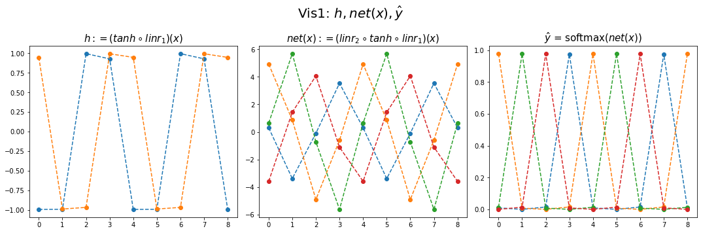
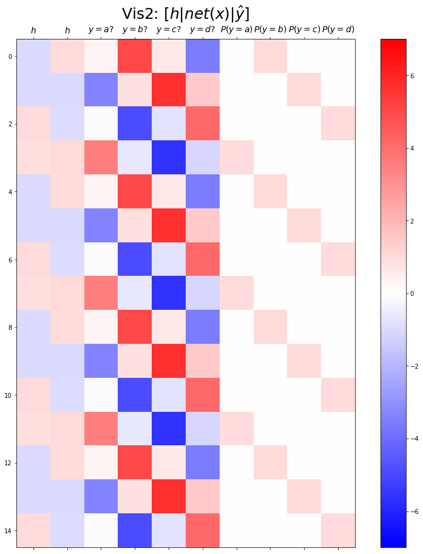

순환신경망 intro (2)– abc예제, abdc예제, AbAcAd예제(1)
강의영상
https://youtube.com/playlist?list=PLQqh36zP38-wXdABtimM1pYK5TjPTBA6X
import
Define some funtions
Exam2: abc
data
하나의 은닉노드를 이용한 풀이 – 억지로 성공
- 데이터정리
mapping = {'a':0,'b':1,'c':2}
x = torch.tensor(f(txt_x,mapping))
y = torch.tensor(f(txt_y,mapping))
x[:5],y[:5](tensor([0, 1, 2, 0, 1]), tensor([1, 2, 0, 1, 2]))- 학습
- 결과해석


- 억지로 맞추고있긴한데 파라메터가 부족해보인다.
- 결과시각화1
fig,ax = plt.subplots(1,3,figsize=(15,5))
ax[0].plot(hidden[:9],'--o'); ax[0].set_title('$h:=(tanh \circ linr_1)(x)$',size=15)
ax[1].plot(net(x).data[:9],'--o'); ax[1].set_title('$net(x):=(linr_2 \circ tanh \circ linr_1)(x)$',size=15)
ax[2].plot(yhat[:9],'--o'); ax[2].set_title('$\hat{y}$ = softmax$(net(x))$',size=15);
fig.suptitle(r"Vis1: $h,net(x),\hat{y}$",size=20)
plt.tight_layout()(tensor([[-0.0147],
[ 0.9653],
[-0.9896],
[-0.0147],
[ 0.9653],
[-0.9896],
[-0.0147],
[ 0.9653],
[-0.9896]]),
tensor([[-4.6804, 0.3071, 5.2894]]),
tensor([-1.5440, 0.9143, -1.3970]))tensor([[-1.4755, 0.9098, -1.4745],
[-6.0618, 1.2108, 3.7086],
[ 3.0875, 0.6104, -6.6312],
[-1.4755, 0.9098, -1.4745],
[-6.0618, 1.2108, 3.7086],
[ 3.0875, 0.6104, -6.6312],
[-1.4755, 0.9098, -1.4745],
[-6.0618, 1.2108, 3.7086],
[ 3.0875, 0.6104, -6.6312]])- (파랑,주황,초록) 순서로 그려짐
- 파랑 = hidden * (-4.6804) + (-1.5440)
- 주황 = hidden * (0.3071) + (0.9143)
- 초록 = hidden * (5.2894) + (-1.3970)
- 내부동작을 잘 뜯어보니까 사실 엉성해. 엄청 위태위태하게 맞추고 있었음.
- weight: 파랑과 초록을 구분하는 역할을 함
- weight + bias: 뭔가 교모하게 애매한 주황값을 만들어서 애매하게 ’b’라고 나올 확률을 학습시킨다. \(\to\) 사실 학습하는 것 같지 않고 때려 맞추는 느낌, 쓸수있는 weight가 한정적이라서 생기는 현상 (양수,음수,0)
참고: torch.nn.Linear()의 비밀?
- 사실 \({\boldsymbol y}={\boldsymbol x}{\bf W} + {\boldsymbol b}\) 꼴에서의 \({\bf W}\)와 \({\boldsymbol b}\)가 저장되는게 아니다.
- \({\boldsymbol y}={\boldsymbol x}{\bf A}^T + {\boldsymbol b}\) 꼴에서의 \({\bf A}\)와 \({\boldsymbol b}\)가 저장된다.
- \({\bf W} = {\bf A}^T\) 인 관계에 있으므로 l1.weight 가 우리가 생각하는 \({\bf W}\) 로 해석하려면 사실 transpose를 취해줘야 한다.
왜 이렇게..?
- 계산의 효율성 때문 (numpy의 구조를 알아야함)
- \({\boldsymbol x}\), \({\boldsymbol y}\) 는 수학적으로는 col-vec 이지만 메모리에 저장할시에는 row-vec 로 해석하는 것이 자연스럽다. (사실 메모리는 격자모양으로 되어있지 않음)
잠깐 딴소리!!
(예시1)
- 아래로 한칸 = 16칸 jump
- 오른쪽으로 한칸 = 8칸 jump
(예시2)
- 아래로 한칸 = 16칸 jump
- 오른쪽으로 한칸 = 8칸 jump
(예시3)
- 아래로 한칸 = 24칸 jump
- 오른쪽으로 한칸 = 8칸 jump
(예시4)
- 아래로한칸 = 2칸 (= 2바이트 jump = 16비트 jump)
- 오른쪽으로 한칸 = 1칸 jump (= 1바이트 jump = 8비트 jump)
진짜 참고..
- 1바이트 = 8비트
- 1바이트는 2^8=256 의 정보 표현
- np.int8은 8비트로 정수를 저장한다는 의미
print(np.array(55,dtype=np.int8))
print(np.array(127,dtype=np.int8))
print(np.array(300,dtype=np.int8)) # overflow 55
127
44딴소리 끝!!
- 결과시각화2
fig,ax = plt.subplots(1,3,figsize=(15,5))
ax[0].plot(hidden[:9],'--o'); ax[0].set_title('$h:=(tanh \circ linr_1)(x)$',size=15)
ax[1].plot(net(x).data[:9],'--o'); ax[1].set_title('$net(x):=(linr_2 \circ tanh \circ linr_1)(x)$',size=15)
ax[2].plot(yhat[:9],'--o'); ax[2].set_title('$\hat{y}$ = softmax$(net(x))$',size=15);
fig.suptitle(r"Vis1: $h,net(x),\hat{y}$",size=20)
plt.tight_layout()
plt.matshow(combined[:15],vmin=-7,vmax=7,cmap='bwr')
plt.xticks(range(7), labels=[r'$h$',r'$y=a?$',r'$y=b?$',r'$y=c?$',r'$P(y=a)$',r'$P(y=b)$',r'$P(y=c)$'],size=14)
plt.colorbar()
plt.gcf().set_figwidth(15)
plt.gcf().set_figheight(15)
plt.title(r"Vis2: $[h | net(x) | \hat{y}]$",size=25)Text(0.5, 1.0, 'Vis2: $[h | net(x) | \\hat{y}]$')
Exam3: abcd
data
하나의 은닉노드를 이용한 풀이 – 억지로 성공
- 데이터정리
mapping = {'a':0,'b':1,'c':2,'d':3}
x = torch.tensor(f(txt_x,mapping))
y = torch.tensor(f(txt_y,mapping))
x[:5],y[:5](tensor([0, 1, 2, 3, 0]), tensor([1, 2, 3, 0, 1]))- 학습
- 결과시각화1
fig,ax = plt.subplots(1,3,figsize=(15,5))
ax[0].plot(hidden[:9],'--o'); ax[0].set_title('$h:=(tanh \circ linr_1)(x)$',size=15)
ax[1].plot(net(x).data[:9],'--o'); ax[1].set_title('$net(x):=(linr_2 \circ tanh \circ linr_1)(x)$',size=15)
ax[2].plot(yhat[:9],'--o'); ax[2].set_title('$\hat{y}$ = softmax$(net(x))$',size=15);
fig.suptitle(r"Vis1: $h,net(x),\hat{y}$",size=20)
plt.tight_layout()
- 결과시각화2
plt.matshow(combined[:15],vmin=-15,vmax=15,cmap='bwr')
plt.xticks(range(9), labels=[r'$h$',r'$y=a?$',r'$y=b?$',r'$y=c?$',r'$y=d?$',r'$P(y=a)$',r'$P(y=b)$',r'$P(y=c)$',r'$P(y=d)$'],size=14)
plt.colorbar()
plt.gcf().set_figwidth(15)
plt.gcf().set_figheight(15)
plt.title(r"Vis2: $[h | net(x) | \hat{y}]$",size=25)Text(0.5, 1.0, 'Vis2: $[h | net(x) | \\hat{y}]$')
두개의 은닉노드를 이용한 풀이 – 깔끔한 성공
- 데이터정리
mapping = {'a':0,'b':1,'c':2,'d':3}
x = torch.tensor(f(txt_x,mapping))
y = torch.tensor(f(txt_y,mapping))
x[:5],y[:5](tensor([0, 1, 2, 3, 0]), tensor([1, 2, 3, 0, 1]))- 학습
- 결과시각화1
fig,ax = plt.subplots(1,3,figsize=(15,5))
ax[0].plot(hidden[:9],'--o'); ax[0].set_title('$h:=(tanh \circ linr_1)(x)$',size=15)
ax[1].plot(net(x).data[:9],'--o'); ax[1].set_title('$net(x):=(linr_2 \circ tanh \circ linr_1)(x)$',size=15)
ax[2].plot(yhat[:9],'--o'); ax[2].set_title('$\hat{y}$ = softmax$(net(x))$',size=15);
fig.suptitle(r"Vis1: $h,net(x),\hat{y}$",size=20)
plt.tight_layout()
- 결과시각화2
plt.matshow(combined[:15],vmin=-7,vmax=7,cmap='bwr')
plt.xticks(range(10), labels=[r'$h$',r'$h$',r'$y=a?$',r'$y=b?$',r'$y=c?$',r'$y=d?$',r'$P(y=a)$',r'$P(y=b)$',r'$P(y=c)$',r'$P(y=d)$'],size=14)
plt.colorbar()
plt.gcf().set_figwidth(15)
plt.gcf().set_figheight(15)
plt.title(r"Vis2: $[h | net(x) | \hat{y}]$",size=25)Text(0.5, 1.0, 'Vis2: $[h | net(x) | \\hat{y}]$')
Exam4: AbAcAd
data
두개의 은닉노드를 이용한 풀이 – 실패
- 데이터정리
mapping = {'A':0,'b':1,'c':2,'d':3}
x = torch.tensor(f(txt_x,mapping))
y = torch.tensor(f(txt_y,mapping))
x[:5],y[:5](tensor([0, 1, 0, 2, 0]), tensor([1, 0, 2, 0, 3]))- 학습
- 결과시각화1
fig,ax = plt.subplots(1,3,figsize=(15,5))
ax[0].plot(hidden[:9],'--o'); ax[0].set_title('$h:=(tanh \circ linr_1)(x)$',size=15)
ax[1].plot(net(x).data[:9],'--o'); ax[1].set_title('$net(x):=(linr_2 \circ tanh \circ linr_1)(x)$',size=15)
ax[2].plot(yhat[:9],'--o'); ax[2].set_title('$\hat{y}$ = softmax$(net(x))$',size=15);
fig.suptitle(r"Vis1: $h,net(x),\hat{y}$",size=20)
plt.tight_layout()
- 결과시각화2
plt.matshow(combined[:15],vmin=-5,vmax=5,cmap='bwr')
plt.xticks(range(10), labels=[r'$h$',r'$h$',r'$y=A?$',r'$y=b?$',r'$y=c?$',r'$y=d?$',r'$P(y=A)$',r'$P(y=b)$',r'$P(y=c)$',r'$P(y=d)$'],size=14)
plt.colorbar()
plt.gcf().set_figwidth(15)
plt.gcf().set_figheight(15)
plt.title(r"Vis2: $[h | net(x) | \hat{y}]$",size=25)Text(0.5, 1.0, 'Vis2: $[h | net(x) | \\hat{y}]$')
- 실패
- 실패를 해결하는 순진한 접근방식: 위 문제를 해결하기 위해서는 아래와 같은 구조로 데이터를 다시 정리하면 될 것이다.
| X | y |
|---|---|
| A,b | A |
| b,A | c |
| A,c | A |
| c,A | d |
| A,d | A |
| d,A | b |
| A,b | A |
| b,A | c |
| … | … |
- 순진한 접근방식의 비판: - 결국 정확하게 직전 2개의 문자를 보고 다음 문제를 예측하는 구조 - 만약에 직전 3개의 문자를 봐야하는 상황이 된다면 또 다시 코드를 수정해야함. - 그리고 실전에서는 직전 몇개의 문자를 봐야하는지 모름.
이것에 대한 해결책은 순환신경망이다. 다음시간에 설명
숙제
주어진 자료가 다음과 같다고 하자.
아래 코드를 변형하여 적절한 네트워크를 설계하고 위의 자료를 학습하라. (깔끔한 성공을 위한 최소한의 은닉노드를 설정할 것)
net = torch.nn.Sequential(
torch.nn.Embedding(num_embeddings=??,embedding_dim=??),
torch.nn.Tanh(),
torch.nn.Linear(in_features=??,out_features=??)
)(풀이)
a,b,c,d,e 를 표현함에 있어서 3개의 은닉노드면 충분하다.
- 1개의 은닉노드 -> 2개의 문자를 표현할 수 있음.
- 2개의 은닉노드 -> 4개의 문자를 표현할 수 있음.
- 3개의 은닉노드 -> 8개의 문자를 표현할 수 있음.
mapping = {'a':0,'b':1,'c':2,'d':3,'e':4}
x = torch.tensor(f(txt_x,mapping))
y = torch.tensor(f(txt_y,mapping))
x[:5],y[:5](tensor([0, 1, 2, 3, 4]), tensor([1, 2, 3, 4, 0]))- 결과시각화1
fig,ax = plt.subplots(1,3,figsize=(15,5))
ax[0].plot(hidden[:9],'--o'); ax[0].set_title('$h:=(tanh \circ linr_1)(x)$',size=15)
ax[1].plot(net(x).data[:9],'--o'); ax[1].set_title('$net(x):=(linr_2 \circ tanh \circ linr_1)(x)$',size=15)
ax[2].plot(yhat[:9],'--o'); ax[2].set_title('$\hat{y}$ = softmax$(net(x))$',size=15);
fig.suptitle(r"Vis1: $h,net(x),\hat{y}$",size=20)
plt.tight_layout()
- 결과시각화2
plt.matshow(combined[:15],vmin=-5,vmax=5,cmap='bwr')
plt.xticks(range(13), labels=[r'$h$',r'$h$',r'$h$',
r'$y=A?$',r'$y=b?$',r'$y=c?$',r'$y=d?$',r'$y=e?$',
r'$P(y=A)$',r'$P(y=b)$',r'$P(y=c)$',r'$P(y=d)$',r'$P(y=e)$'],size=13)
plt.colorbar()
plt.gcf().set_figwidth(15)
plt.gcf().set_figheight(15)
plt.title(r"Vis2: $[h | net(x) | \hat{y}]$",size=25)Text(0.5, 1.0, 'Vis2: $[h | net(x) | \\hat{y}]$')